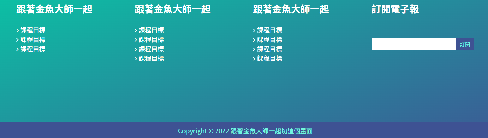
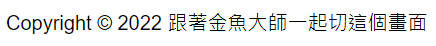
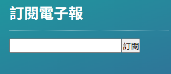
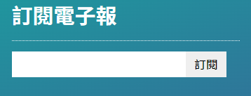
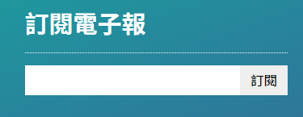

Source Url
學習點
1. 著作版權 C 怎麼做出來的

只要寫入 © 就可以產出這個著作版權 c 的符號囉，注意，那個分號 ; 也要寫進去。
所以，要達成上面的內容的話，只要寫入這段程式碼Copyright © 2022 跟著金魚大師一起切這個畫面 就完成囉。
2. 讓各個文字區塊都分配到一樣的寬度 - flex-grow
課堂上的手法不是用手動設死每個文字區塊的 width 屬性值，而是利用 flex-grow 的屬性來達成。
首先，先將每一個文字區塊寬度設為 0px，接著，再對這些文字區塊設 flex-grow: 1，這就代表了，每一個文字區塊都會分到一份父層剩餘空白區塊的空間，也就是這樣子每一個文字區塊的寬度就都達到一樣寬度的效果囉。
1 | .main-footer .container { |
這邊直接寫一個小範例，會比較容易看出來 flex-grow: 1 搭配 width: 0px 的效果
在上面的範例中，你可以試試看把 flex-grow: 1 和 width: 0px 從子層的 CSS style 裡面拿掉，會發現這兩個區塊就不再是相同的寬度囉。
很好用的技巧~
3. 將原生的 input 輸入欄位和送出表單欄位併在一起的效果
原生的 input 欄位(<input type='text' />)和 送出的按鈕(<input type='submit' value='送出'/>)，在它們父層下 display: flex 將它們併在同一列，畫面會長的像下面這樣

會發現它們之間會有小小的間隔，這個是原生的 border 造成的，所以，我們要將它們的 border 設定取消並讓它們大塊一點，那就要加入以下的內容
1 | .footer-subs form input[type="text"], |
經過以上的設定後，畫面會長的像下面這樣

是不是看起來比較美觀呢!
但是! 我們不滿足，你可以發現填寫欄位和按鈕整體的寬度並沒有填滿整個父層寬度，這樣也有點不美觀，所以，我們對這個 input 填寫欄位加上 flex-grow:1 的屬性之後，讓父層剩餘的父層寬度空間都給 input 填寫欄位，如此，就可以達到下面的效果囉。

4. 讓訂閱電子報區塊的 form 置中
我們將父層 .footer-subs 加入以下設定
1 | .footer-subs { |
這時候，footer-subs 內的子元素排版看起來都沒有變化。
最後，我們對裡面的 form 使用 margin: auto 0 這行的效果就可以讓 form 垂直置中囉。